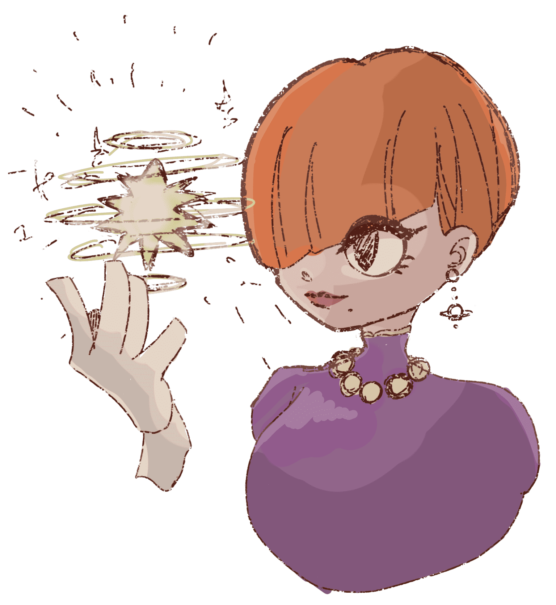
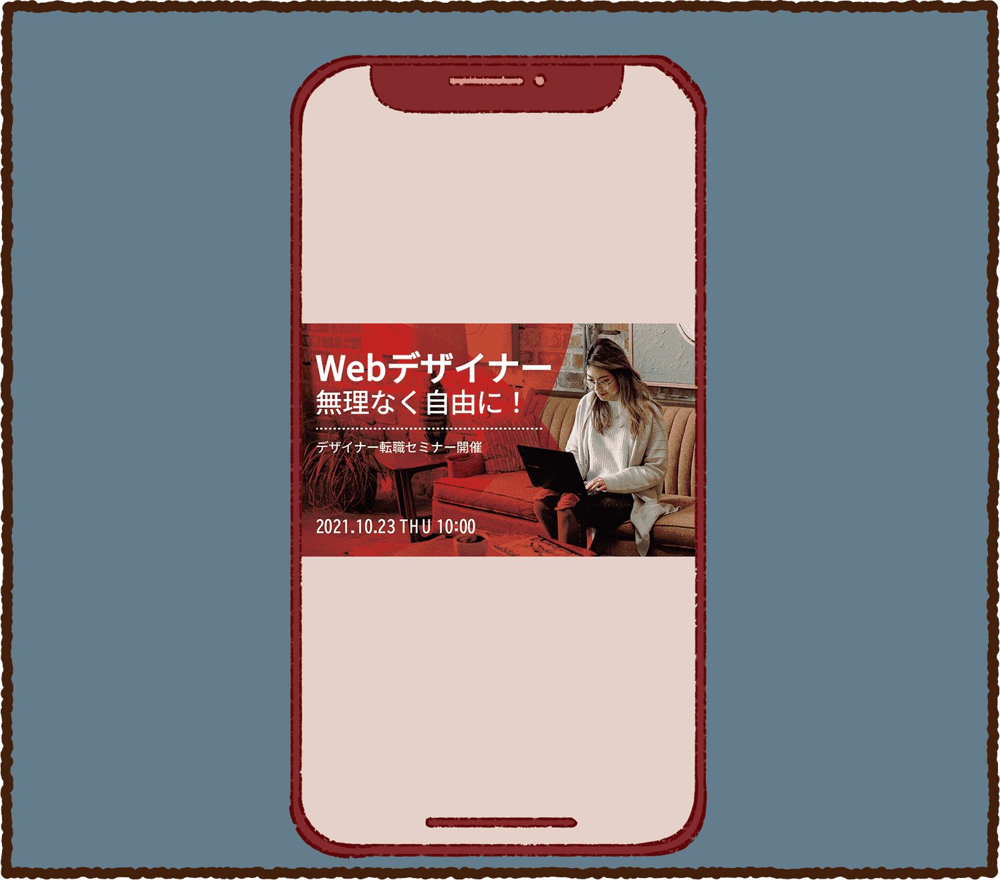
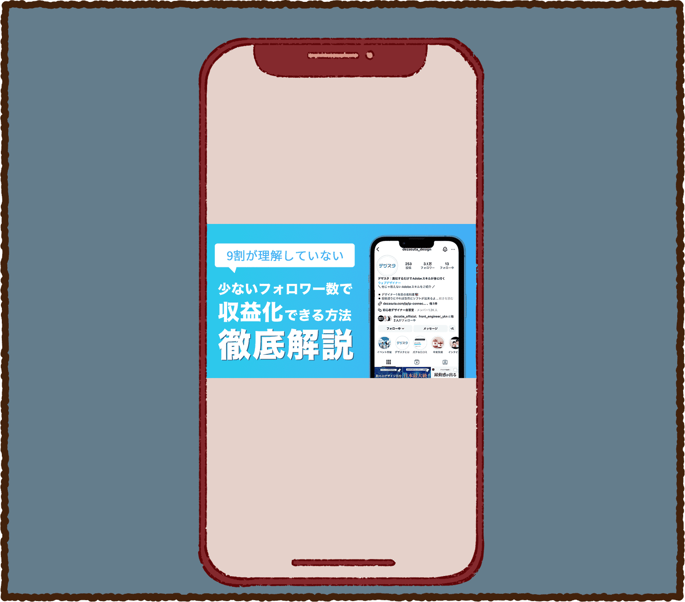
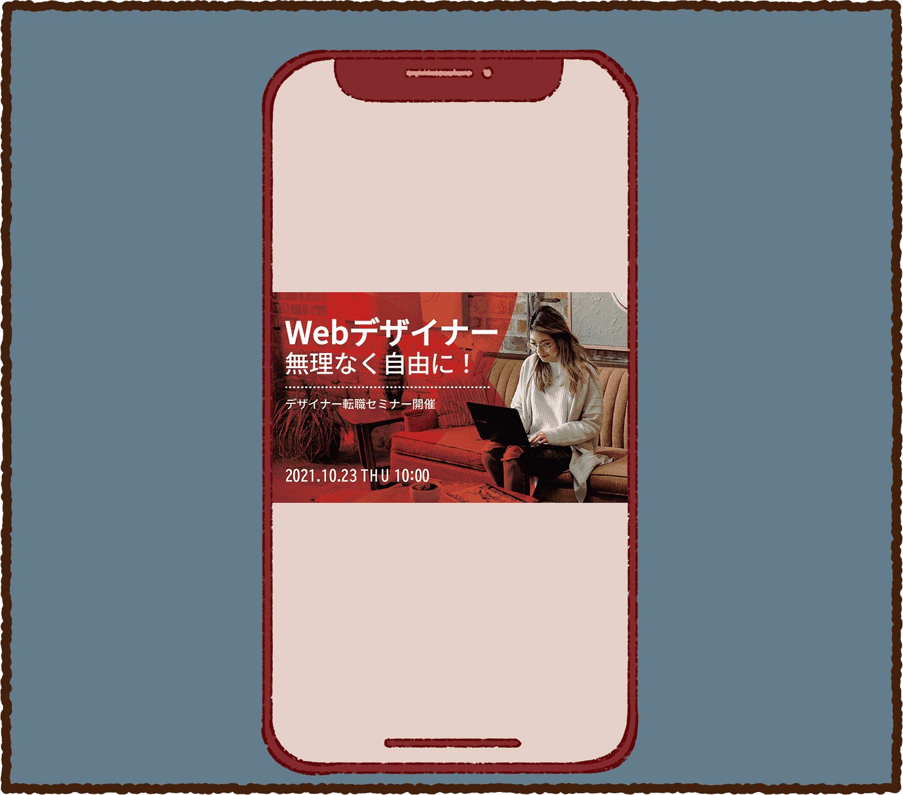
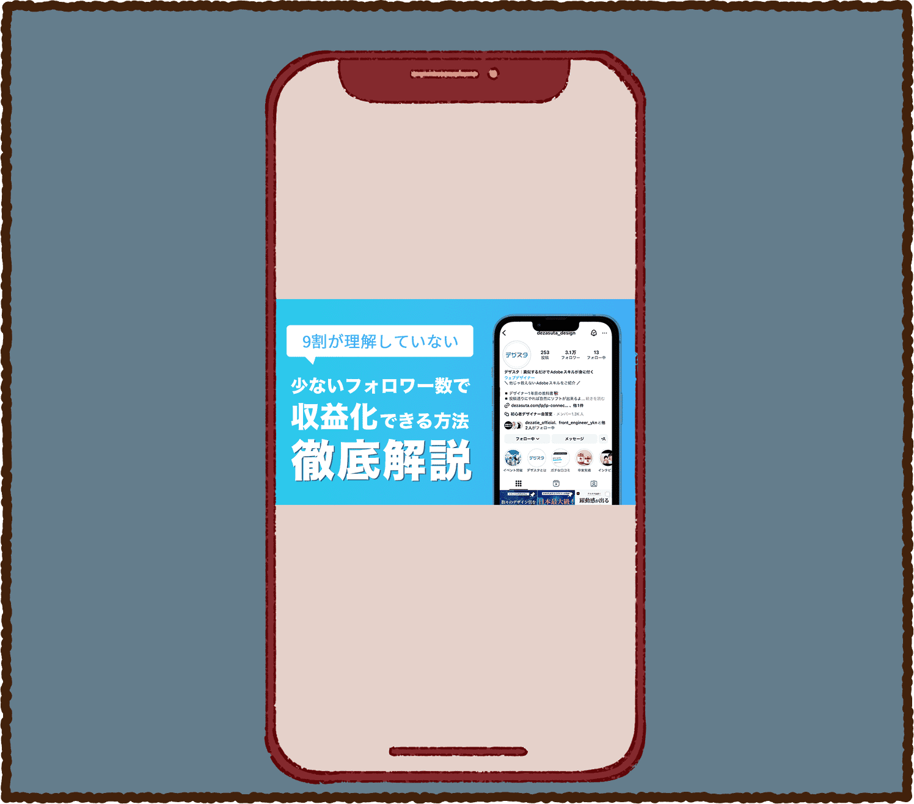
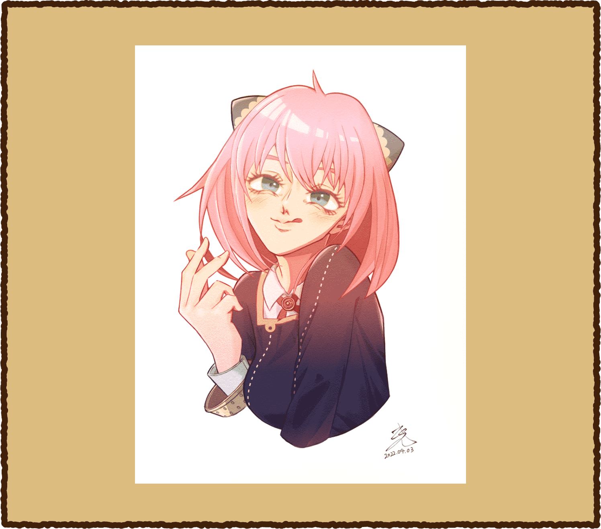
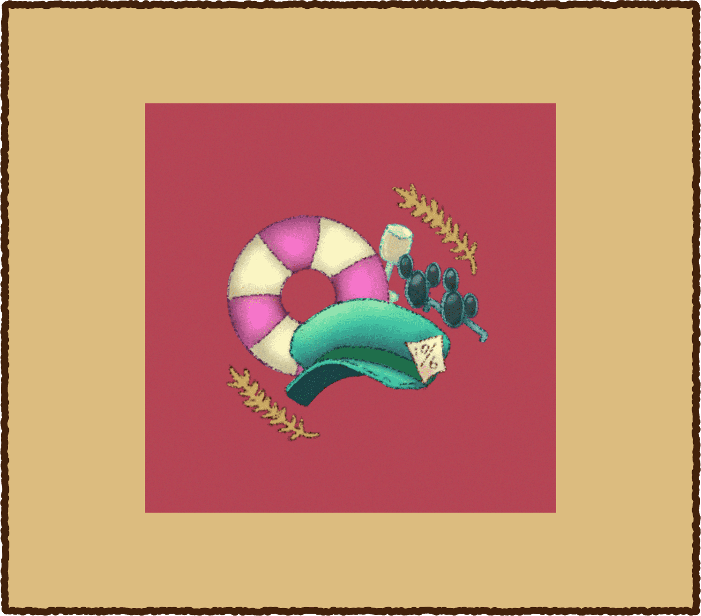
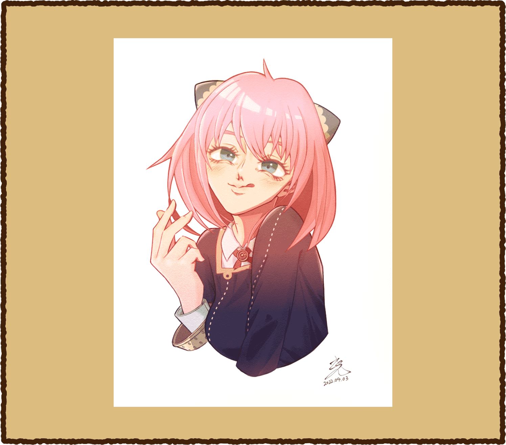
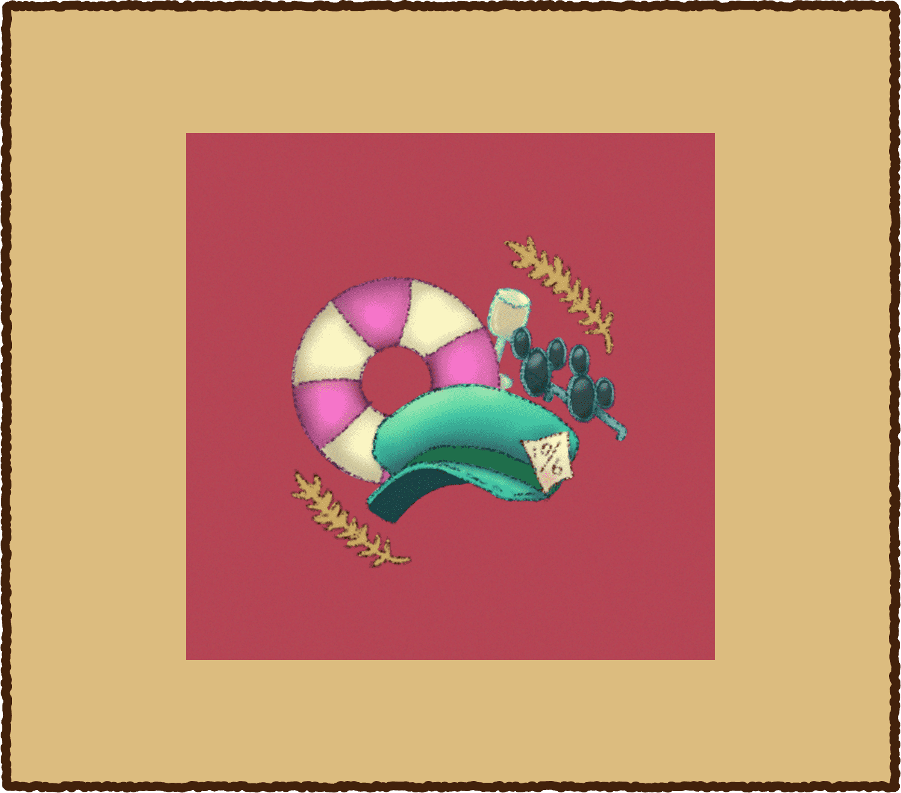

letter design

ワクワクで
届ける想いを。
WEB DESIGNER PORTFORIO SITE
ワクワクで
届ける想いを。
WEB DESIGNER PORTFORIO SITE
デザインは物語であり、魔法である。
どちらも想像力から生まれるものだ。
その想像力の源はワクワクする心だ。
その心は人と人を繋いでいく。
WEBデザイナーの藤原は、そんな考えのもと、「誰もが持っ
ている“ワクワク”をくすぐり、誰かの“ワクワクする世界”
を広め、コミュニティを繋げる手伝いをしたい。」そんな想
いで、お客様のための魔法(デザイン)を届けていくのである。
2000年9月、東京で生まれ、東京で育つ。
色彩検定3級、認定健康心理士の資格を取得済み。
小さい頃は、イラストやデザインに関わる仕事に就くこと、ディズニーキャストになることが夢だった。
大学在学中にディズニーキャストになり、訪れるゲストにハピネスを届け、夢を実現。
「やら」「枸櫞(くえん)」という2つの名前で趣味のイラストを描き、イベントに出展したりと作家としても活動中。


大学では、心理学部で
臨床心理学を学んだ。
大学在学中にディズニーキャスト
として働き、訪れるゲストにハピネスを届けた。
大学卒業後は、大手メガネチェーン店へ販売スタッフとして就職し、大学時や色彩検定で得た学びを活かし、販売から、店内ディスプレイ、POP制作を行った。
現在は、デザイナーやイラストレーターとして、「ヒト・コト・モノ」の想いを届けることが目標。
HPやLP、バナー広
告等のWeb制作ま
で、ご要望の世界観
を実現できるデザイ
ンをご提案します。
【ツール】
illustrator / Photoshop
デザインカンプを基に、
HTML・CSSで再現し
ます。動きのあるサイト
制作、各デバイスに合
わせたコーディングに
も対応します。
【ツール】
HTML / CSS / Java Script
デジタルツールを用い
て、ご希望の雰囲気に
合わせたテイストで作
成します。当サイトで
使用しているイラスト
は自作のものです。
【ツール】
ibisPaint / Adobe fresco
 



デザインやイラストに関することなど、制作での
お悩みについて、お気軽にご相談・お問い合わ
せください。InstagramのDMでも承っており
ます。
それぞれが持つ個性(らしさ)でお客様の想い
描く世界観をつくり、「いいね！」「素敵！」など
のワクワクを届けていきます。
「maigcal design(当サイト)」を読破していただき、
ありがとうございました。
当サイトは、マンガや手紙のような「ワクワクが擽られ
る魔法のような温かい時間」と「想いを届ける」をイメ
ージし、イラストやレイアウト、コーディングまでデザ
インしました。このサイトを通して、少しでもみなさま
のワクワクに刺激が走っていたら幸いです。
誰もが持つ個性(らしさ)を世界観に落とし込み、
「ワクワクの力でコミュニティを広げる魔法」を届けられ
るよう、日々スキルアップに励んでいきます。
みなさまとご一緒にお仕事ができる日を楽しみにして
おります。
 


